Página 1
GUIA DE PROGRESSÃO
Ow3neD Digimon Masters Online Status e itens necessários para cada momento do jogo
EARLY GAME MID GAME LATE GAME
Documento exclusivo da guild Ow3neD
Créditos: Baihu
EARLY • MID • LATE GAME
Do Early ao Late Game em 14 páginas.
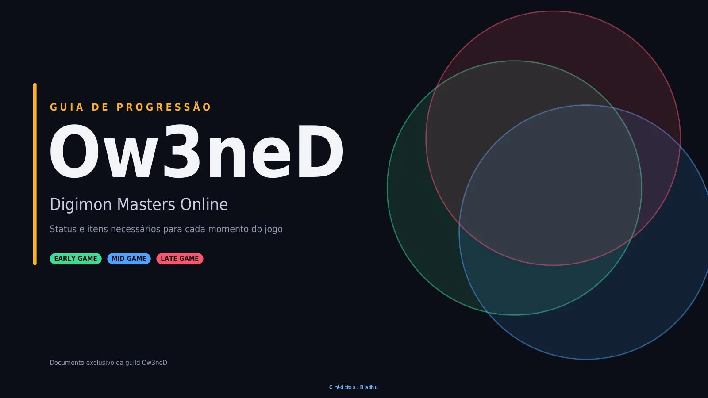
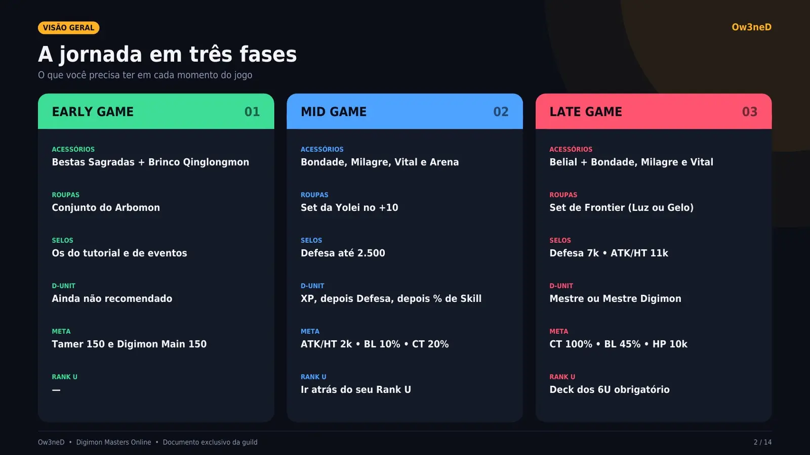
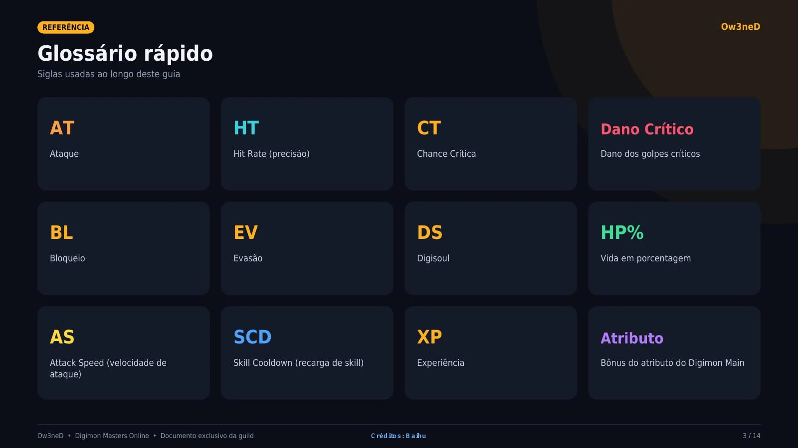
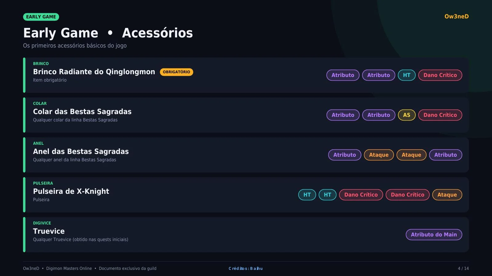
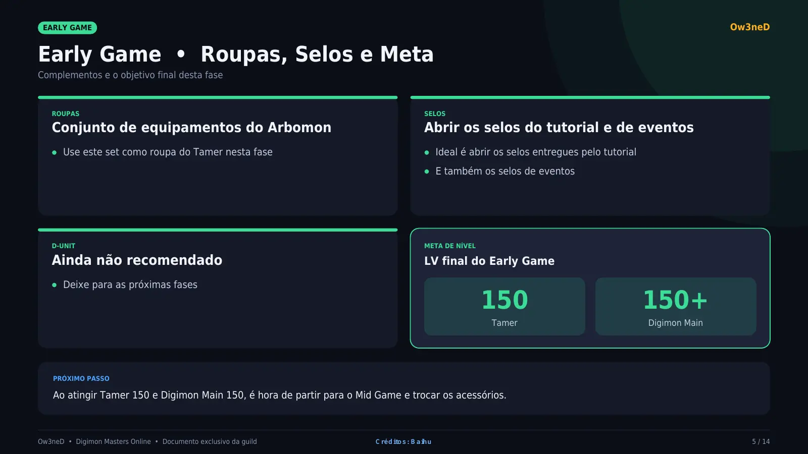
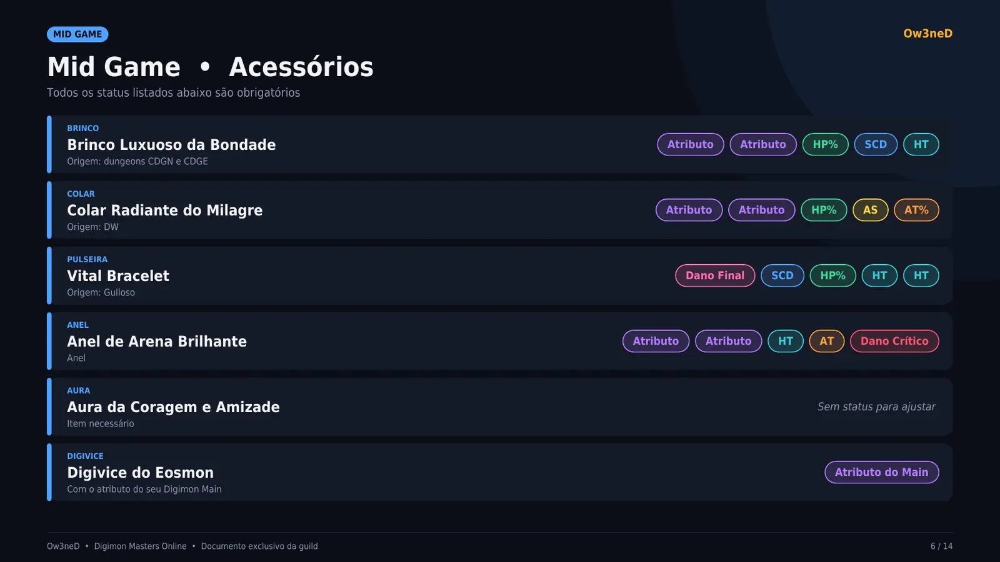
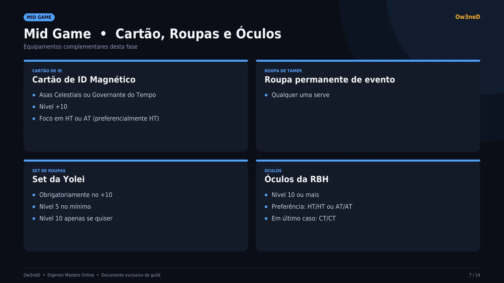
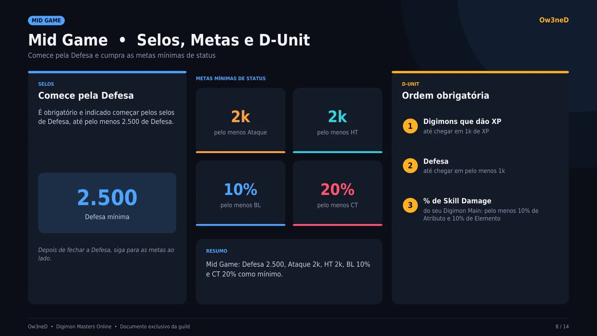
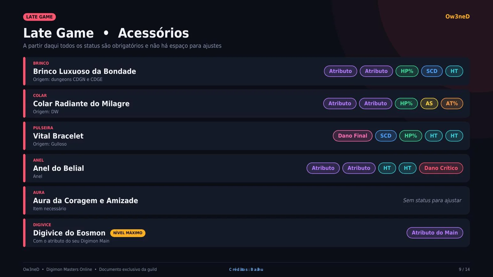
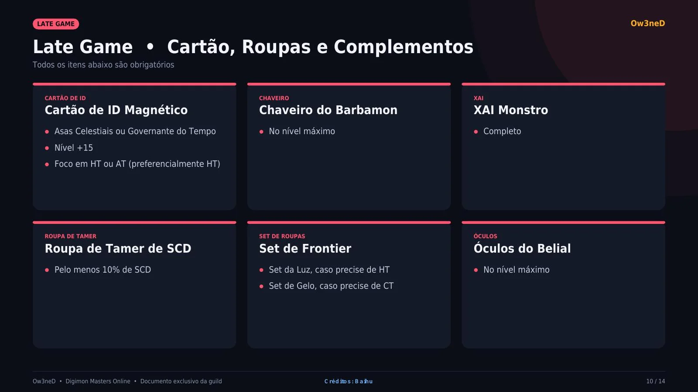
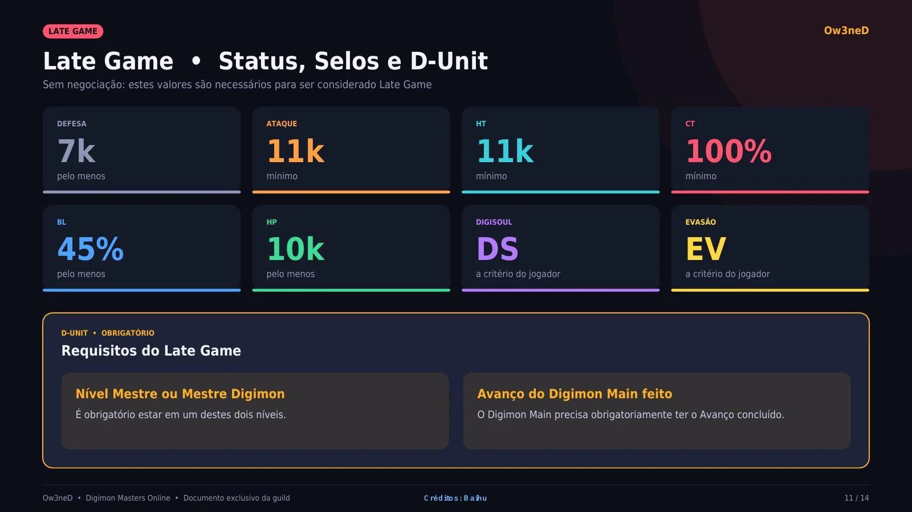
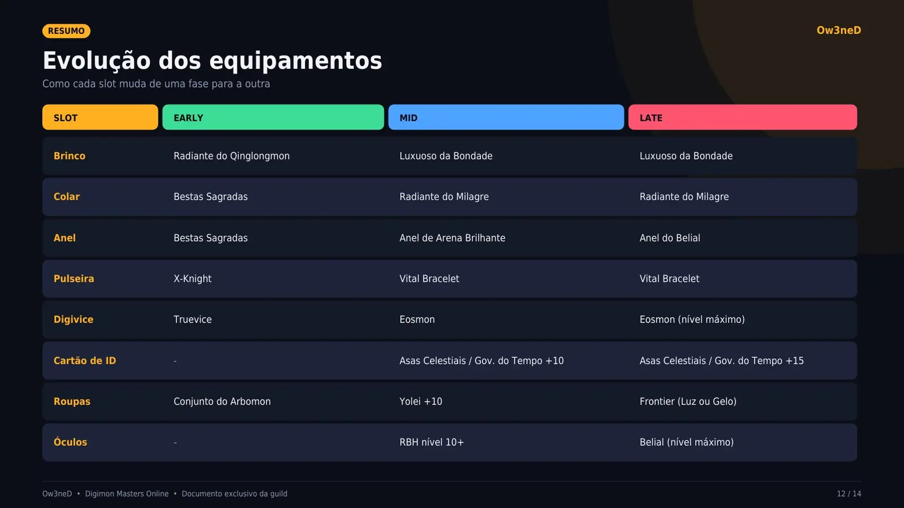
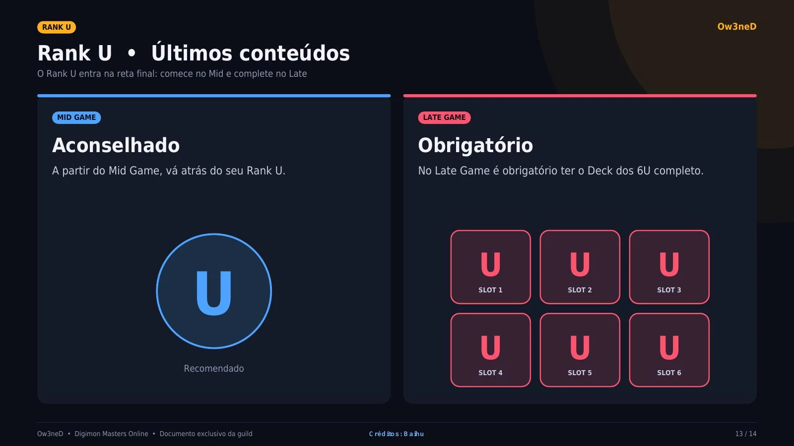
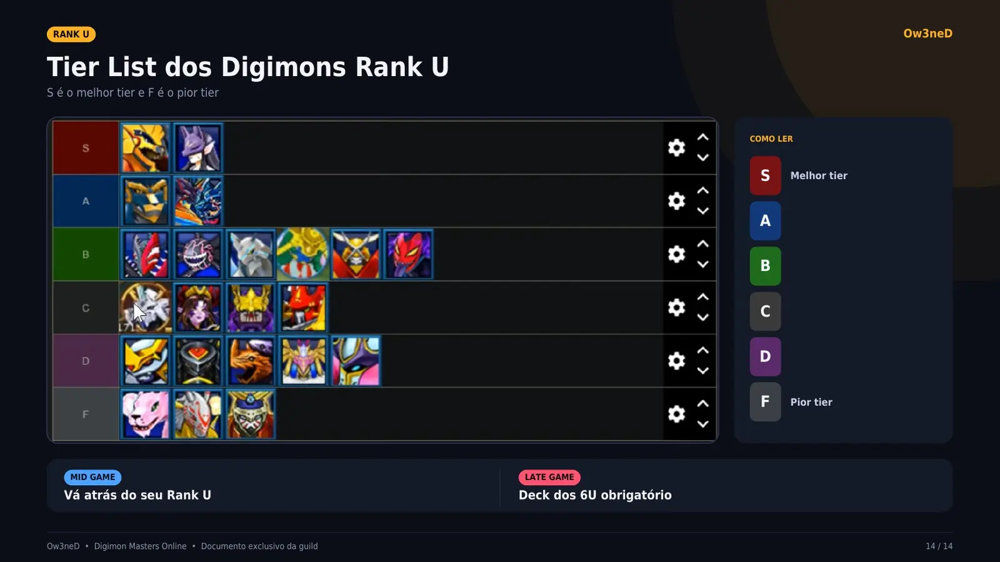
GUIA DE PROGRESSÃO
Ow3neD Digimon Masters Online Status e itens necessários para cada momento do jogo
EARLY GAME MID GAME LATE GAME
Documento exclusivo da guild Ow3neD
Créditos: Baihu
VISÃO GERAL Ow3neD
A jornada em três fases O que você precisa ter em cada momento do jogo
EARLY GAME 01 MID GAME 02 LATE GAME 03
ACESSÓRIOS ACESSÓRIOS ACESSÓRIOS
Bestas Sagradas + Brinco Qinglongmon Bondade, Milagre, Vital e Arena Belial + Bondade, Milagre e Vital
ROUPAS ROUPAS ROUPAS
Conjunto do Arbomon Set da Yolei no +10 Set de Frontier (Luz ou Gelo)
SELOS SELOS SELOS
Os do tutorial e de eventos Defesa até 2.500 Defesa 7k • ATK/HT 11k
D-UNIT D-UNIT D-UNIT
Ainda não recomendado XP, depois Defesa, depois % de Skill Mestre ou Mestre Digimon
META META META
Tamer 150 e Digimon Main 150 ATK/HT 2k • BL 10% • CT 20% CT 100% • BL 45% • HP 10k
RANK U RANK U RANK U
— Ir atrás do seu Rank U Deck dos 6U obrigatório
Ow3neD • Digimon Masters Online • Documento exclusivo da guild Créditos: Baihu 2 / 14
REFERÊNCIA Ow3neD
Glossário rápido Siglas usadas ao longo deste guia
AT HT CT Dano Crítico Ataque Hit Rate (precisão) Chance Crítica Dano dos golpes críticos
BL EV DS HP% Bloqueio Evasão Digisoul Vida em porcentagem
AS SCD XP Atributo Attack Speed (velocidade de Skill Cooldown (recarga de skill) Experiência Bônus do atributo do Digimon Main ataque)
Ow3neD • Digimon Masters Online • Documento exclusivo da guild Créditos: Baihu 3 / 14
EARLY GAME Ow3neD
Early Game • Acessórios Os primeiros acessórios básicos do jogo
BRINCO
Brinco Radiante do Qinglongmon OBRIGATÓRIO Atributo Atributo HT Dano Crítico Item obrigatório
COLAR
Colar das Bestas Sagradas Atributo Atributo AS Dano Crítico Qualquer colar da linha Bestas Sagradas
ANEL
Anel das Bestas Sagradas Atributo Ataque Ataque Atributo Qualquer anel da linha Bestas Sagradas
PULSEIRA
Pulseira de X-Knight HT HT Dano Crítico Dano Crítico Ataque Pulseira
DIGIVICE
Truevice Atributo do Main Qualquer Truevice (obtido nas quests iniciais)
Ow3neD • Digimon Masters Online • Documento exclusivo da guild Créditos: Baihu 4 / 14
EARLY GAME Ow3neD
Early Game • Roupas, Selos e Meta Complementos e o objetivo final desta fase
ROUPAS SELOS
Conjunto de equipamentos do Arbomon Abrir os selos do tutorial e de eventos Use este set como roupa do Tamer nesta fase Ideal é abrir os selos entregues pelo tutorial E também os selos de eventos
D-UNIT META DE NÍVEL
Ainda não recomendado LV final do Early Game
Deixe para as próximas fases
150 150+ Tamer Digimon Main
PRÓXIMO PASSO
Ao atingir Tamer 150 e Digimon Main 150, é hora de partir para o Mid Game e trocar os acessórios.
Ow3neD • Digimon Masters Online • Documento exclusivo da guild Créditos: Baihu 5 / 14
MID GAME Ow3neD
Mid Game • Acessórios Todos os status listados abaixo são obrigatórios
BRINCO
Brinco Luxuoso da Bondade Atributo Atributo HP% SCD HT Origem: dungeons CDGN e CDGE
COLAR
Colar Radiante do Milagre Atributo Atributo HP% AS AT% Origem: DW
PULSEIRA
Vital Bracelet Dano Final SCD HP% HT HT Origem: Gulloso
ANEL
Anel de Arena Brilhante Atributo Atributo HT AT Dano Crítico Anel
AURA
Aura da Coragem e Amizade Sem status para ajustar Item necessário
DIGIVICE
Digivice do Eosmon Atributo do Main Com o atributo do seu Digimon Main
Ow3neD • Digimon Masters Online • Documento exclusivo da guild Créditos: Baihu 6 / 14
MID GAME Ow3neD
Mid Game • Cartão, Roupas e Óculos Equipamentos complementares desta fase
CARTÃO DE ID ROUPA DE TAMER
Cartão de ID Magnético Roupa permanente de evento Asas Celestiais ou Governante do Tempo Qualquer uma serve Nível +10 Foco em HT ou AT (preferencialmente HT)
SET DE ROUPAS ÓCULOS
Set da Yolei Óculos da RBH Obrigatoriamente no +10 Nível 10 ou mais Nível 5 no mínimo Preferência: HT/HT ou AT/AT Nível 10 apenas se quiser Em último caso: CT/CT
Ow3neD • Digimon Masters Online • Documento exclusivo da guild Créditos: Baihu 7 / 14
MID GAME Ow3neD
Mid Game • Selos, Metas e D-Unit Comece pela Defesa e cumpra as metas mínimas de status
METAS MÍNIMAS DE STATUS SELOS D-UNIT
Comece pela Defesa Ordem obrigatória É obrigatório e indicado começar pelos selos de Defesa, até pelo menos 2.500 de Defesa. 2k 2k 1 Digimons que dão XP pelo menos Ataque pelo menos HT até chegar em 1k de XP
Defesa 2 até chegar em pelo menos 1k
10% 20% 2.500 pelo menos BL pelo menos CT 3 % de Skill Damage do seu Digimon Main: pelo menos 10% de Defesa mínima Atributo e 10% de Elemento
Depois de fechar a Defesa, siga para as metas ao RESUMO lado. Mid Game: Defesa 2.500, Ataque 2k, HT 2k, BL 10% e CT 20% como mínimo.
Ow3neD • Digimon Masters Online • Documento exclusivo da guild Créditos: Baihu 8 / 14
LATE GAME Ow3neD
Late Game • Acessórios A partir daqui todos os status são obrigatórios e não há espaço para ajustes
BRINCO
Brinco Luxuoso da Bondade Atributo Atributo HP% SCD HT Origem: dungeons CDGN e CDGE
COLAR
Colar Radiante do Milagre Atributo Atributo HP% AS AT% Origem: DW
PULSEIRA
Vital Bracelet Dano Final SCD HP% HT HT Origem: Gulloso
ANEL
Anel do Belial Atributo Atributo HT HT Dano Crítico Anel
AURA
Aura da Coragem e Amizade Sem status para ajustar Item necessário
DIGIVICE
Digivice do Eosmon NÍVEL MÁXIMO Atributo do Main Com o atributo do seu Digimon Main
Ow3neD • Digimon Masters Online • Documento exclusivo da guild Créditos: Baihu 9 / 14
LATE GAME Ow3neD
Late Game • Cartão, Roupas e Complementos Todos os itens abaixo são obrigatórios
CARTÃO DE ID CHAVEIRO XAI
Cartão de ID Magnético Chaveiro do Barbamon XAI Monstro Asas Celestiais ou Governante do Tempo No nível máximo Completo Nível +15 Foco em HT ou AT (preferencialmente HT)
ROUPA DE TAMER SET DE ROUPAS ÓCULOS
Roupa de Tamer de SCD Set de Frontier Óculos do Belial Pelo menos 10% de SCD Set da Luz, caso precise de HT No nível máximo Set de Gelo, caso precise de CT
Ow3neD • Digimon Masters Online • Documento exclusivo da guild Créditos: Baihu 10 / 14
LATE GAME Ow3neD
Late Game • Status, Selos e D-Unit Sem negociação: estes valores são necessários para ser considerado Late Game
DEFESA ATAQUE HT CT
7k 11k 11k 100% pelo menos mínimo mínimo mínimo
BL HP DIGISOUL EVASÃO
45% 10k DS EV pelo menos pelo menos a critério do jogador a critério do jogador
D-UNIT • OBRIGATÓRIO
Requisitos do Late Game
Nível Mestre ou Mestre Digimon Avanço do Digimon Main feito É obrigatório estar em um destes dois níveis. O Digimon Main precisa obrigatoriamente ter o Avanço concluído.
Ow3neD • Digimon Masters Online • Documento exclusivo da guild Créditos: Baihu 11 / 14
RESUMO Ow3neD
Evolução dos equipamentos Como cada slot muda de uma fase para a outra
SLOT EARLY MID LATE
Brinco Radiante do Qinglongmon Luxuoso da Bondade Luxuoso da Bondade
Colar Bestas Sagradas Radiante do Milagre Radiante do Milagre
Anel Bestas Sagradas Anel de Arena Brilhante Anel do Belial
Pulseira X-Knight Vital Bracelet Vital Bracelet
Digivice Truevice Eosmon Eosmon (nível máximo)
Cartão de ID - Asas Celestiais / Gov. do Tempo +10 Asas Celestiais / Gov. do Tempo +15
Roupas Conjunto do Arbomon Yolei +10 Frontier (Luz ou Gelo)
Óculos - RBH nível 10+ Belial (nível máximo)
Ow3neD • Digimon Masters Online • Documento exclusivo da guild Créditos: Baihu 12 / 14
RANK U Ow3neD
Rank U • Últimos conteúdos O Rank U entra na reta final: comece no Mid e complete no Late
MID GAME LATE GAME
Aconselhado Obrigatório A partir do Mid Game, vá atrás do seu Rank U. No Late Game é obrigatório ter o Deck dos 6U completo.
U U U U SLOT 1 SLOT 2 SLOT 3
Recomendado U U U SLOT 4 SLOT 5 SLOT 6
Ow3neD • Digimon Masters Online • Documento exclusivo da guild Créditos: Baihu 13 / 14
RANK U Ow3neD
Tier List dos Digimons Rank U S é o melhor tier e F é o pior tier
COMO LER
S Melhor tier
A
B
C
D
F Pior tier
MID GAME LATE GAME
Vá atrás do seu Rank U Deck dos 6U obrigatório
Ow3neD • Digimon Masters Online • Documento exclusivo da guild Créditos: Baihu 14 / 14